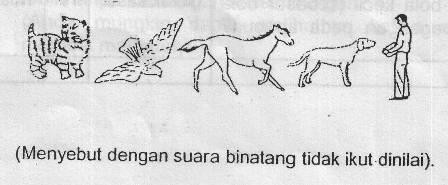

Kuesioner Praskrining untuk Anak 30 bulan
- Dapatkah anak melepas pakaiannya seperti: baju, rok, Sosialisasi & atau celananya? (topi clan kaos kaki tidak ikut dinilai)
- Dapatkah anak berjalan naik tangga sendiri? Jawab YA jika ia naik tangga dengan posisi tegak atau berpegangan pada Binding atau pegangan tangga. Jawab TIDAK jika ia naik tangga dengan merangkak atau anda tidak membolehkan anak naik tangga atau anak harus berpegangan pada seseorang.
- Tanpa bimbingan, petunjuk atau bantuan anda, dapatkah anak menunjuk dengan benar paling seclikit satu bagian badannya (rambut, mata, hidung, mulut, atau bagian badan yang lain)?
- Dapatkah anak makan nasi sendiri tanpa banyak tumpah?
- Dapatkah anak membantu memungut mainannya sendiri atau membantu mengangkat piring jika diminta?
- Dapatkah anak menendang bola kecil (sebesar bola tenis) Gerak kasar ke depan tanpa berpegangan pada apapun? Mendorong tidak ikut dinilai.
- Bila diberi pensil, apakah anak mencoret-coret kertas tanpa bantuan/petunjuk?
- Dapatkah anak meletakkan 4 buah kubus satu persatu di atas kubus yang lain tanpa menjatuhkan kubus itu? Kubus yang digunakan ukuran 2.5 – 5 cm.
- Dapatkah anak menggunakan 2 kata pada saat berbicara seperti “minta minum”, “mau tidur”? “Terimakasih” dan “Dadag” tidak ikut dinilai.
- Apakah anak dapat menyebut 2 diantara gambar-gambar ini tanpa bantuan?
